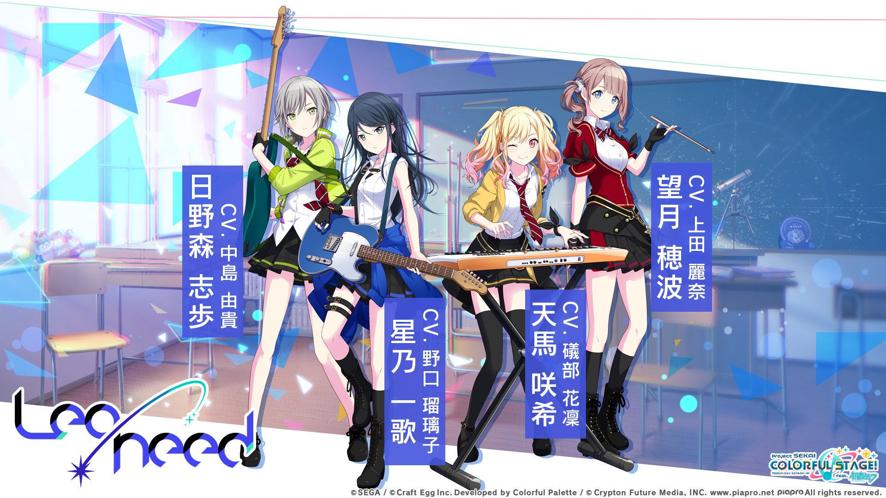
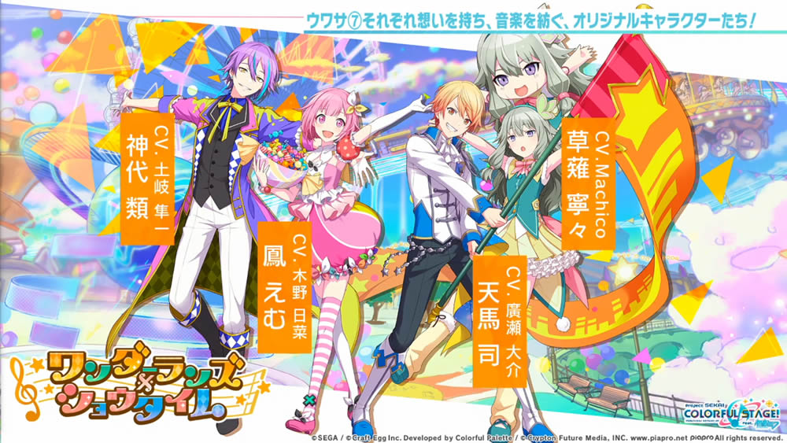
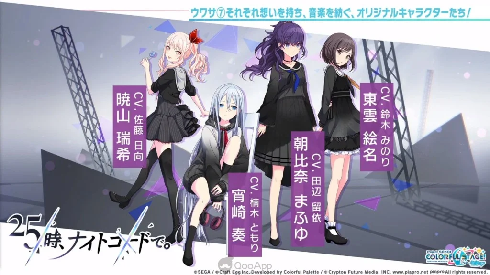

《世界計畫 繽紛舞台！ feat.初音未來》
☆簡介
《世界計畫 繽紛舞台！ feat.初音未來》（日語：プロジェクトセカイ カラフルステージ！ feat.初音ミク)
簡稱《世界計畫》（日語：プロセカ），是基於抽卡的視覺小說風格音樂手機遊戲。
由Colorful Palette、Craft Egg和克理普敦未來媒體聯合開發，SEGA發行，並有漫畫、節目等跨媒體製作計劃。
遊戲以克理普敦未來媒體旗下的虛擬藝人初音未來為主角，並以6個音樂組合26個角色展開遊戲情節。
☆遊戲內容
· 故事背景
劇情設定在原型為現代日本東京都澀谷區的「現實世界」和與「現實世界」相異的，從「人們『真正的心願』中誕生的」虛擬世界「SEKAI」之中。
人們可以通過與「SEKAI」一同誕生的，無標題無歌詞無旋律的歌曲《Untitled》進入「SEKAI」，組合「VIRTUAL SINGER」的成員以不同的形象出現在不同的「SEKAI」中，幫助人們找到「真正的心願」。
· 主要人物
共有6個組合26個角色
VIRTUAL SINGER
- 初音未來（初音ミク（はつね ミク），聲：藤田咲）
- 鏡音鈴（鏡音 リン（かがみね リン），聲：下田麻美）
- 鏡音鈴（鏡音 リン（かがみね リン），聲：下田麻美）
- 巡音流歌（巡音 ルカ（めぐりね ルカ ），聲：淺川悠）
- MEIKO（MEIKO（めいこ），聲：拜鄉芽衣子）
- KAITO（KAITO（かいと），聲：風雅直人）

Leo/need
- 星乃一歌（星乃 一歌（ほしの いちか），聲：野口瑠璃子）
- 天馬咲希（天馬 咲希（てんま さき），聲：礒部花凜）
- 望月穗波（望月 穂波（もちづき ほなみ），聲：上田麗奈））
- 日野森志步（日野森 志歩（ひのもり しほ），聲：中島由貴）

MORE MORE JUMP!
- 花里實乃理（花里 みのり（はなさと みのり），聲：小倉唯）
- 桐谷遙（桐谷 遙（きりたに はるか），聲：吉岡茉祐）
- 桃井愛莉（桃井 愛莉（ももい あいり），聲：降幡愛）
- 日野森雫（日野森 雫（ひのもり しずく），聲：本泉莉奈）

Vivid BAD SQUAD
- 小豆澤心羽（小豆沢 こはね（あずさわ こはね），聲：秋奈）
- 白石杏（白石 杏（しらいし あん），聲：鷲見友美ジェナ）
- 東雲彰人（東雲 彰人（しののめ あきと），聲：今井文也）
- 東雲彰人（東雲 彰人（しののめ あきと），聲：今井文也）

Wonderlands×Showtime
- 天馬司（天馬 司（てんま つかさ）），聲：廣瀨大介）
- 鳳笑夢（鳳 えむ（おおとり えむ），聲：木野日菜）
- 草薙寧寧（草薙 寧々（くさなぎ ねね）），聲：Machico）
- 神代類（神代 類（かみしろ るい），聲：土岐隼一）

25點，Nightcord見
- 宵崎奏（宵崎 奏（よいさき かなで），聲：楠木燈）
- 朝比奈真冬（朝比奈 まふゆ（あさひな まふゆ），聲：田邊留依）
- 東雲繪名（東雲 絵名（しののめ えな），聲：鈴木實里）
- 曉山瑞希（暁山 瑞希（あきやま みずき），聲：佐藤日向）
